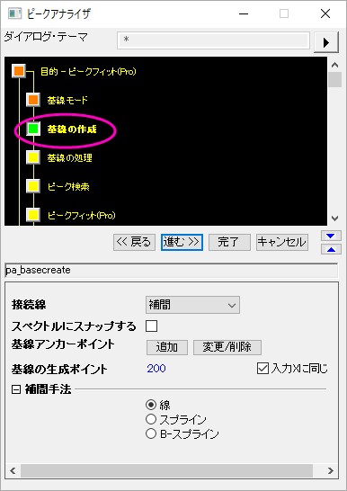

ピークアナライザ, 基線の作成ページ
PeakAnalyzer-CreateBaseline
このページは、ピークアナライザの基線モードページの基線モードの項目で、ユーザ定義が選択されているときのみ利用できます。これは基線モードページで見つかった基線のアンカーポイントを接続して、基線を作成します。
-
- 
- メニューの 解析: ピークと基線: ピークアナライザー: ダイアログを開くを選択します。
- ウィンドウタイプ: ワークブック、グラフ
ダイアログテーマ
ダイアログボックス内のオプション
| 接続法 |
このドロップダウンを使って、基線を作成するために基線のアンカーポイントをどのように接続するのかを指定します。
- 基線のアンカーポイント間を線で補間します。補間手法の設定が表示され、線、スプライン、Bスプラインから選択します。
- 「Baseline」カテゴリのフィット関数をドロップダウンリストで指定します。利用可能な関数は、フィット関数オーガナイザ（ダイアログを開いていない状態でF9キーを押して開きます）で確認できます。
|
| スペクトルにスナップする |
これを使って、基線のアンカーポイントをスペクトルデータに合成させるかどうかを指定します。これが選択されていると、基線のアンカーポイントを追加または移動したときにスペクトル上に配置されます。 |
| 「追加」ボタン |
このボタンをクリックするとき、スペクトルデータを持つグラフの希望のポイントをダブルクリックして、基線のアンカーポイントを手動で追加できます。 |
| 修正/削除 |
このボタンをクリックすると、既存のアンカーポイントを手動で移動または削除することができます。 |
| 基線のデータポイント数 |
基線のデータセットのポイント数を指定します。右側に入力と同じX チェックボックスがあります。このチェックボックスが選択されていると、基線のデータセットのポイント数がスペクトルデータのポイント数と等しくなります。 |
| パラメータ |
接続線がフィットのとき利用できます。フィットが完了したら、フィットパラメータの値がこのブランチに表示されます。 |